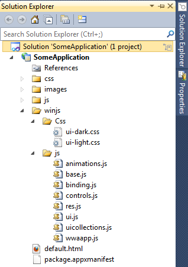
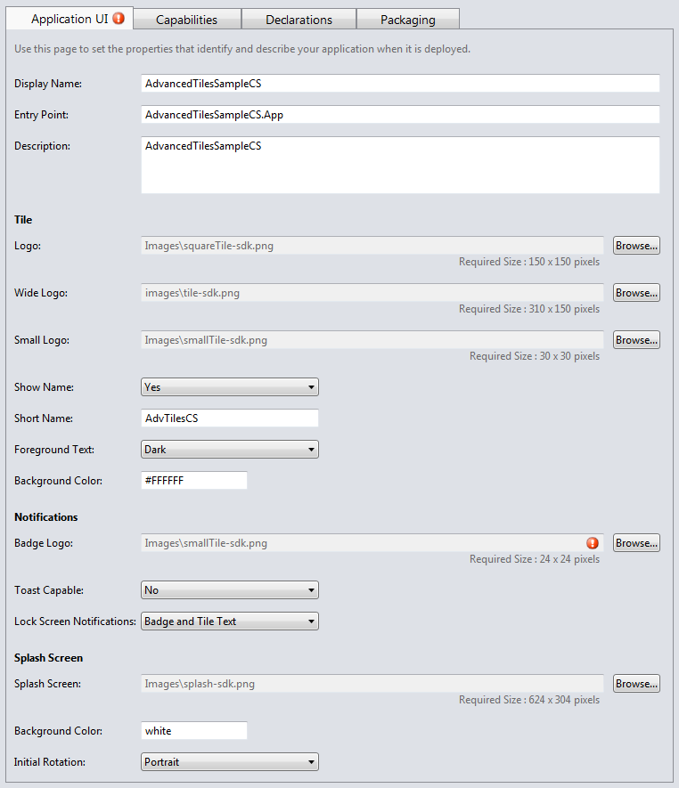

egad! not that HTML thing!
ooooh! shiny!
ninjas may or may not be on fire
<UserControl x:Class="MyApplication.CollectionPage"
Loaded="Page_Loaded" Unloaded="Page_Unloaded"
mc:Ignorable="d"
d:DesignHeight="768" d:DesignWidth="1366">
private void Page_Loaded(object sender, RoutedEventArgs e)
{
// attach handlers
// set default view state
}
private void Page_Unloaded(object sender, RoutedEventArgs e)
{
// detach handlers
}<UserControl x:Class="MyApplication.MainPage"
...
>
<Frame Source="MyApplication.SomePage">
<Frame.ContentTransitions>
<TransitionCollection>
<-- slide the content in 200px when it changes -->
<EntranceThemeTransition FromHorizontalOffset="200" />
</TransitionCollection>
</Frame.ContentTransitions>
</Frame>
</UserControl><Page x:Class="MyApplication.SomePage"
xmlns="http://schemas.microsoft.com/winfx/2006/xaml/presentation"
xmlns:x="http://schemas.microsoft.com/winfx/2006/xaml">
<TextBlock Text="Hello World" FontSize="50"/>
</Page>protected override void OnLaunched(LaunchActivatedEventArgs args)
{
ShowCollection();
Window.Current.Activate();
}
public static void ShowCollection()
{
var page = new CollectionPage();
// setup data
Window.Current.Content = page;
}|  |
<!DOCTYPE html>
<html>
<head>
<meta charset="utf-8" />
<title>My Application</title>
<link rel="stylesheet" href="/winjs/css/ui-light.css" />
<script type="ms-deferred/javascript" src="/winjs/js/base.js"></script>
<!-- other WinJS files -->
<link rel="stylesheet" href="/css/default.css" />
<!-- other stylesheets -->
<script type="ms-deferred/javascript" src="/js/default.js"></script>
<!-- other scripts -->
</head>
<body>
<!-- layout here -->
</body>
</html><body>
<div class="splitPage fragment">
<header role="banner" aria-label="Header content">
<button disabled class="win-backbutton" aria-label="Back"></button>
<h1 class="pageTitle win-title"></h1>
</header>
<section class="itemListSection">
<div class="itemList"
data-win-control="WinJS.UI.ListView"
data-win-options="{layout: {type: WinJS.UI.ListLayout}, selectionMode: 'none' }">
</div>
</section>
</div>
</body><div class="itemTemplate"
data-win-control="WinJS.Binding.Template">
<div class="largeIconTextTemplate">
<img class="avatar"
data-win-bind="src: user.profile_image_url" />
<div class="largeIconTextTemplateBackground">
<div class="largeIconTextTemplateLargeText"
data-win-bind="textContent: user.screen_name">
</div>
<div class="largeIconTextTemplateMediumText"
data-win-bind="textContent: text"></div>
</div>
</div>
</div>var lv = WinJS.UI.getControl(elements.querySelector('.itemList'));
WinJS.UI.setOptions(lv, {
dataSource: pageData.menuItems,
itemRenderer: elements.querySelector('.itemTemplate'),
oniteminvoked: menuItemInvoked
});
lv.refresh();var list = document.querySelector(".itemList");
var allItems = document.querySelectorAll(".item");
var newItem = document.createElement("div");
newItem.className = "item";
newItem.style.background = randomColor();
var anim = WinJS.UI.Animation.createAddToListAnimation(newItem, allItems);
list.insertBefore(newItem, list.firstChild);
anim.execute(); WinJS.Application.addEventListener('fragmentappended', function handler(e) {
if (e.location === '/html/splitPage.html') {
fragmentLoad(e.fragment, e.state);
}
});
function fragmentLoad(elements, options) {
// attach listeners for layout changes
WinJS.UI.processAll(elements)
.then(function () {
// attach event handlers
// bind data
// other stuff
});
}function loadPage(location, state) {
WinJS.UI.Fragments.clone(location, state).then(function (frag) {
var content = document.getElementById("content");
content.innerHTML = "";
content.appendChild(frag);
WinJS.Application.queueEvent({
type: "fragmentappended",
location: location,
fragment: content,
state: state
});
});
}WinJS.Application.onmainwindowactivated = function (e) {
if (e.detail.kind === Windows.ApplicationModel.Activation.ActivationKind.launch) {
loadPage("/fragments/somePage.html");
}
}using System;
using System.Net.Http;
using Windows.Data.Json;
public static async void Process(string url)
{
var client = new HttpClient();
var response = await client.GetAsync(url);
var text = response.Content.ReadAsString();
// convert to JSON
}WinJS.xhr({
type: "GET",
url: someTwitterUrl
}).then(processResults);
function processResults(data) {
var tweets = JSON.parse(data.response);
// massage JSON
// update UI
}using System;
using Windows.Security.Authentication.Web;
public static async void Authenticate(string callback)
{
var startURI = BuildOAuthUrl();
var endURI = new Uri(callback);
var auth = WebAuthenticationOptions.Default;
var result = await WebAuthenticationBroker.AuthenticateAsync(auth, startURI, endURI);
HandleCallback(result);
}var startURI = new Windows.Foundation.Uri(twitterURL);
var endURI = new Windows.Foundation.Uri(callbackURL);
var auth = Windows.Security.Authentication.Web.WebAuthenticationOptions.default;
asyncCall = Windows.Security.Authentication.Web.WebAuthenticationBroker
.authenticateAsync(auth, startURI, endURI)
.then(function (result) { handleAuthCallback(result, onSuccess, onFailure); },
onFailure });var settings = Windows.Storage.ApplicationData.Current.LocalSettings.Values;
// add a value
settings.Add("oAuthTokenClient", oauthToken);
// find a value (returns false if not found)
object token;
var success = settings.TryGetValue("oAuthTokenClient", out token);
// remove from collection
settings.Remove("oAuthTokenClient");
var settings = Windows.Storage.ApplicationData.current.localSettings.values;
// add a value
settings.insert("oAuthTokenClient", oauth_token);
// find a value (returns null if not found)
var oauth_token_secret = settings.lookup("oAuthTokenClient");
// remove from collection
settings.remove("oAuthTokenClient");
var composite = new Windows.Storage.ApplicationDataCompositeValue();
composite["foo"] = "bar"; // composite.foo = "bar";
composite["abc"] = 1;
var roamingSettings = Windows.Storage.ApplicationData.current.roamingSettings;
roamingSettings.values["someKey"] = composite;
New Metro Shell -> Rewritten File Dialog |
$deity be praised! |
public static async void ProcessImages()
{
var picker = new FileOpenPicker();
picker.FileTypeFilter.Add(".jpg");
picker.FileTypeFilter.Add(".jpeg");
picker.FileTypeFilter.Add(".png");
picker.ViewMode = PickerViewMode.Thumbnail;
var file = await picker.PickSingleFileAsync(); // PickMultipleFilesAsync is also available
var details = await file.OpenForReadAsync();
var stream = details.AsStream();
}var picker = new Windows.Storage.Pickers.FileOpenPicker();
picker.viewMode = Windows.Storage.Pickers.PickerViewMode.thumbnail;
// if you want to put the user at a specific folder initially
picker.suggestedStartLocation = Windows.Storage.Pickers.PickerLocationId.picturesLibrary;
picker.fileTypeFilter.replaceAll([".png", ".jpg", ".jpeg"]);
openPicker.pickSingleFileAsync().then(function (file) {
if (file) {
// we have a file
} else {
// we do not
}
});using Windows.Devices.Geolocation;
Geolocator locator;
public static void Start()
{
locator = new Geolocator();
locator.PositionChanged += positionChanged;
}
void positionChanged(Geolocator sender, PositionChangedEventArgs args)
{
// get the location
var lat = args.Position.Coordinate.Latitude;
var long = args.Position.Coordinate.Longitude;
// get the address associated with this location
var city = args.Position.CivicAddress.City;
var state = args.Position.CivicAddress.State;
}
var loc = null;
function listen() {
if (!loc) {
loc = new Windows.Devices.Geolocation.Geolocator();
}
if (loc) {
loc.addEventListener("positionchanged", onPositionChanged);
} else {
console.log("Couldn't create Geolocator.");
}
}
function stop() {
if (loc) {
loc.removeEventListener("positionchanged", onPositionChanged);
loc = null;
}
}
function onPositionChanged(args) {
var pos = args.position;
}function getLocation() {
var locator = new Windows.Devices.Geolocation.Geolocator();
if (locator) {
locator.getGeopositionAsync().then(positionChanged);
} else {
console.log("Couldn't create Geolocator.");
}
}
function positionChanged(pos) {
if (pos) {
var newLocation = pos.coordinate;
}
}|  |
void UpdateBadgeWithNumber(int number)
{
// can use BadgeTemplateType.BadgeGlyph for icons instead
XmlDocument badgeXml = BadgeUpdateManager.GetTemplateContent(BadgeTemplateType.BadgeNumber);
// omitted: inject values into XML
// example of customised XML:
// <?xml version="1.0" encoding="utf-16"?><badge value="play" version="1"/>
// create and fire async
var badge = new BadgeNotification(badgeXml);
BadgeUpdateManager.CreateBadgeUpdaterForApplication().Update(badge);
}void UpdateTileWithText(string text)
{
var tileXml = TileUpdateManager.GetTemplateContent(TileTemplateType.TileWideText03);
XmlNodeList textElements = tileXml.GetElementsByTagName("text");
textElements.Item(0).AppendChild(tileXml.CreateTextNode(text));
var tile = new TileNotification(tileXml);
TileUpdateManager.CreateTileUpdaterForApplication().Update(tile);
}partial class App
{
// other code
protected override void OnSearchActivated(SearchActivatedEventArgs args)
{
var searchResultsPage = new SearchResultsPage();
searchResultsPage.Activate(args);
}
}function activated(e) {
if (e.kind === Windows.ApplicationModel.Activation.ActivationKind.search) {
WinJS.Navigation.navigate('/search.html', { queryText: e.queryText });
}
}
Windows.UI.WebUI.WebUIApplication.addEventListener('activated', activated);try {
var pane = Windows.ApplicationModel.Search.SearchPane.getForCurrentView();
pane.addEventListener('querysubmitted', querySubmitted, false);
} catch (e) { }
// If the application is not running when a query is received, navigate to the search page.
function querySubmitted(e) {
if (WinJS.Navigation.location !== searchPage) {
WinJS.Navigation.navigate(searchPage, e);
} else {
handleQuery(document.body, e);
}
}
function handleQuery(elements, e) {
// use e.queryText and perform search
}using Windows.ApplicationModel.DataTransfer;
public void MainPage_Loaded()
{
var manager = DataTransferManager.GetForCurrentView();
manager.DataRequested += DataRequested;
}
void DataRequested(DataTransferManager sender, DataRequestedEventArgs e)
{
e.Request.Data.SetText(someImportantTweet);
}
void PromptUserToShare(object sender, RoutedEventArgs e)
{
// user can also select Share from the app bar to view this dialog
DataTransferManager.ShowShareUI();
}protected override void OnSharingTargetActivated(ShareTargetActivatedEventArgs args)
{
var data = args.shareOperation.Data;
bool containsTextFormat;
// check what format is included
data.Contains(StandardDataFormats.Text, out containsTextFormat);
if (containsTextFormat)
{
// handle the ShareOperation content
var title = data.Properties.Title;
var desc = data.Properties.Description;
var msg = data.GetText();
// TODO: other stuff
}
}/
#